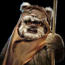
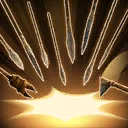
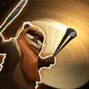

Wicket
Jittery Ewok Attacker with Critical Hit and Stealth synergies

Jittery Ewok Attacker with Critical Hit and Stealth synergies
Deal Physical damage to target enemy and gain Critical Chance Up for 2 turns. If an Ewok ally calls Wicket to Assist, they also gain Critical Chance Up for 2 turns.

Deal Physical damage to all enemies. Ewok allies gain 10% Turn Meter for each Critical Hit scored.

Deal Physical damage to target enemy and call target other ally to Assist. If the target ally is an Ewok, Wicket and target ally gain Stealth and Critical Damage Up for 2 turns.
Wicket gains 10% Critical Damage for each living Ewok ally and each Stealthed ally. At the end of his turn, Wicket has a 50% chance to take another turn. This chance is reduced to 10% if this effect triggered in the previous turn. Whenever Wicket scores a Critical Hit, all Ewok allies recover 4% Health and 2% Protection.